Developmental Disabilities
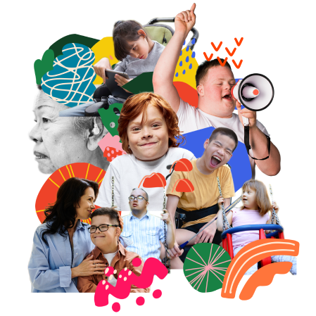
The campaign seeks to raise awareness about the inclusion of people with
developmental disabilities in all facets of community life,
as well as awareness of
the barriers that people with disabilities still
sometimes face in connecting to the communities in which they live.
(read more)
Gender Equality Month
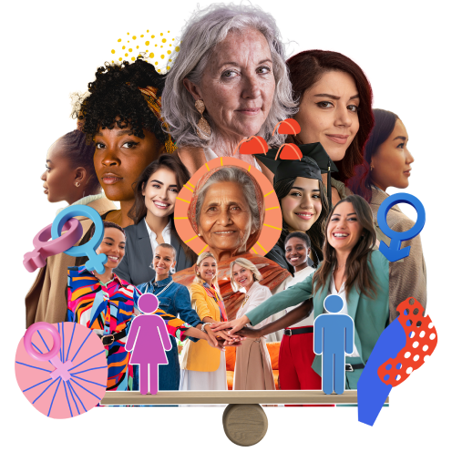
March is regarded as Gender Equality Month, which serves as a call to celebrate the history,
contributions, and wellness of community members who are impacted by gender-based bias and oppression.
Greek-American Heritage Month
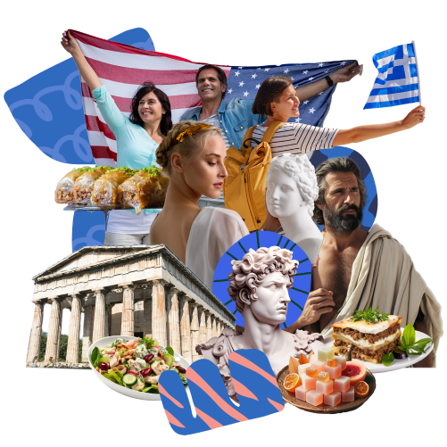
Greek American Heritage Month, also called Hellenic Heritage Month, is celebrated every March
to celebrate Greek culture and history. It coincides with Greece's National Independence Day which occurs
on Match 25.
Irish-American Heritage Month
During Irish American Heritage Month, is observed every March
to celebrate every part of Irish culture and history. The first observance dates back to 1967
with the first St. Patrick's Parade in New York City.
National Colon Cancer Awareness Month
Colorectal cancer is the second deadliest cancer in the United States.
Every March, National Colorectal Cancer Awareness Month spotlights this disease and inspires
more people to get checked starting at age 45.
National Kidney Month
March is National Kidney Month. As many as 90% of Americans who have chronic kidney
disease don't know they have the disease until it is very advanced. The
earlier you find out you have kidney disease, the sooner you can take steps to protect your
kidneys from further damage.
(read more)
National Multiple Sclerosis Education and Awareness Month
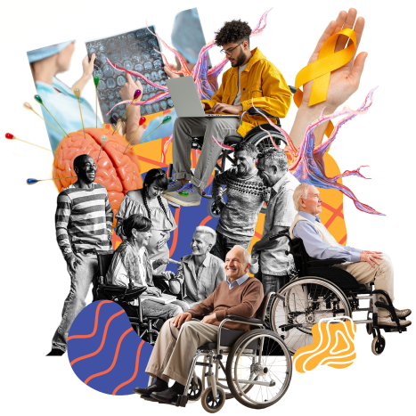
National Multiplie Sclerosis Education and Awareness Month is observed in March of each year,
a nationwide effort by the Multiple Sclerosis Foundation and affiliated
groups to raise the public's awareness of multiple sclerosis.
National Women's History Month
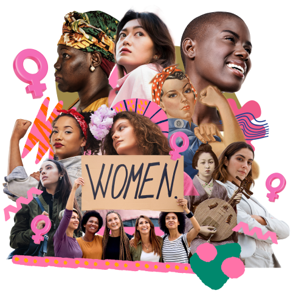
Women’s History Month began as a local celebration in Santa Rosa, California.
The Education Task Force of the Sonoma County (California) Commission on the
Status of Women planned and executed a “Women’s History Week” celebration in 1978.
(read more)
Employee Appreciation Day
Employee Appreciation Day is an event, observed on the first Friday in March,
meant for employers to give thanks or recognition to their employees.
It was
created by Dr. Bob Nelson who was a founding member of Recognition
Professionals International in 1995, initially to celebrate the publication of
his book 1,001 Ways to Reward Employees and to remind employers to thank their
employees when they do good work.
(read more)
Maha Shivratri
Maha Shivratri is a Hindu festival celebrated annually in honour of the deity Shiva.
According to the Hindu calendar, the festival is observed on the fourteenth
day of the dark (waning)
half of the lunar month of Phalguna or Magha. The festival commemorates the wedding of Shiva and
Parvati, and the occasion that Shiva performs his divine dance, called the Tandava.
(read more)
International Women's Day
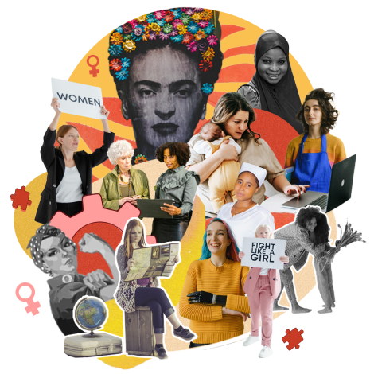
International Women's Day (IWD) is a global holiday celebrated annually on March 8 as a
focal point in the women's rights movement, bringing attention to
issues such as gender equality,
reproductive rights, and violence and abuse against women. Spurred on by the universal female suffrage
movement, IWD originated from labor movements in North America and Europe during the early 20th century.
(read more)
Pi Day
Pi Day is an annual celebration of the mathematical constant π (pi).
Pi Day is observed on March 14 (the 3rd month) since 3, 1, and 4 are the first three digits of π, and was
first celebrated in the United States.
Ramandan begins
Ramadan is the ninth month of the Islamic calendar, observed by Muslims worldwide as a
month of fasting, prayer, reflection, and community. A
commemoration of Muhammad's
first revelation, the annual observance of Ramadan is regarded as one of the Five
Pillars of Islam and lasts twenty-nine to thirty days, from one sighting of the crescent moon to the next.
(read more)
Equal Pay Day
The symbolic day was first observed in 1996 by the National Committee on Pay Equity,
a coalition of women's and civil rights organizations, labor unions,
professional associations and individuals working to eliminate sex and race
based wage discrimination and to achieve pay equity.
(read more)
St. Patrick's Day

Saint Patrick's Day was made an official Christian feast day in the early 17th century
and is observed by the Catholic Church, the Anglican Communion
(especially the Church of Ireland),
the Eastern Orthodox Church, and the Lutheran Church. The day commemorates Saint Patrick and the
arrival of Christianity in Ireland, and, by extension, celebrates the heritage and culture of the Irish in general.
(read more)
World Down Syndrome Day
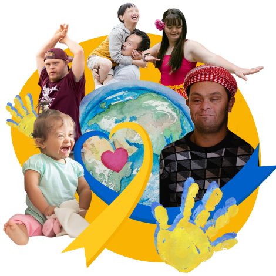
Every year on March 21, World Down Syndrome Day is observed to create awareness
about Down syndrome. It is a condition in which a child is born with an
extra 21st chromosome. A common activity is wearing colorful or mismatched socks,
to show support for people with Down syndrome.
(read more)
Purim
Purim is a Jewish holiday that celebrates the survival of the Jewish people
in ancient Persia after their Persian rulers marked them for death in the 5th century BCE.
Palm Sunday
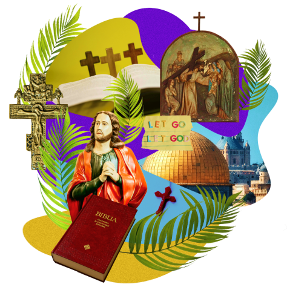
Palm Sunday is the Christian moveable feast that falls on the Sunday before Easter.
The feast commemorates Christ's triumphal entry into Jerusalem, an event mentioned
in each of the four canonical Gospels.
Holi
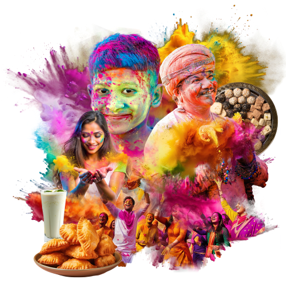
Holi is a popular and significant Hindu festival celebrated as the Festival of Colors,
Love, and Spring. It celebrates the eternal and divine love of the deities
Radha and Krishna. Additionally, the day signifies the triumph of good over evil, as it commemorates the
victory of Vishnu as Narasimha over Hiranyakashipu.
(read more)
International Day of Remembrance of the Victims of Slavery
The day honours and remembers those who suffered and died as a consequence of the transatlantic slave trade,
which has been called "the worst violation of
human rights in history", in which over 400 years more than 15 million men, women and children were the victims.
(read more)
Good Friday
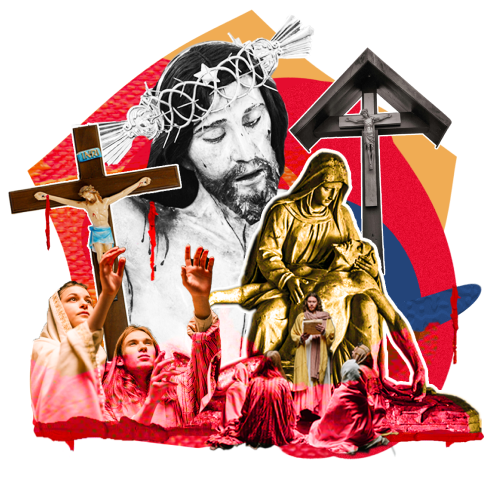
Good Friday is a Christian holiday commemorating the crucifixion of Jesus and his death at Calvary.
It is observed during Holy Week as part of the Paschal
Triduum. It is also known as Holy Friday, Great Friday, Great and Holy Friday (also Holy and Great Friday), and Black Friday.
(read more)
International Transgender Day of Visibility
An annual event occurring on March 31 dedicated to celebrating transgender people and raising awareness
of discrimination faced by transgender people worldwide, as well as a celebration of their contributions
to society.
Easter
A Christian festival and cultural holiday commemorating the resurrection of Jesus from the dead,
described in the New Testament as having occurred on the third day of his burial following his
crucifixion by the Romans at Calvary.
Laylat al-Qadr
The Night of Power (Arabic: لیلة القدر, Night of Decree, or Night of Determination,
also the Precious Night), is, in Islamic belief, the night when Muslims believe the
Quran
was first sent down from Heaven to the world and also the night when the
first verses of the Quran were revealed to the Islamic prophet Muhammad;
it is described to be better than a thousand months of worshipping.
(read more)
Eid al-Fitr
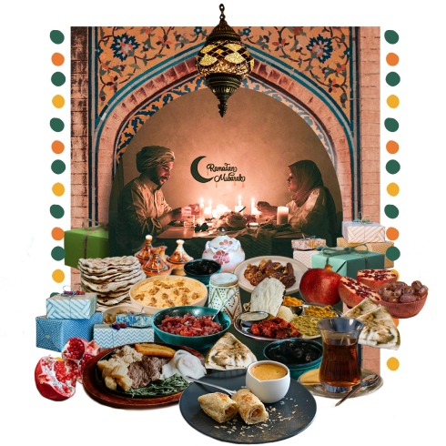
The religious holiday of Eid al-Fitr is celebrated by Muslims worldwide
because it marks the end of the month-long dawn-to-sunset fasting of Ramadan.
It is considered a very important and meaning observance in the Islamic religion.